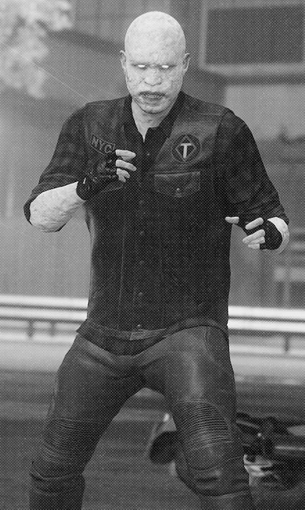
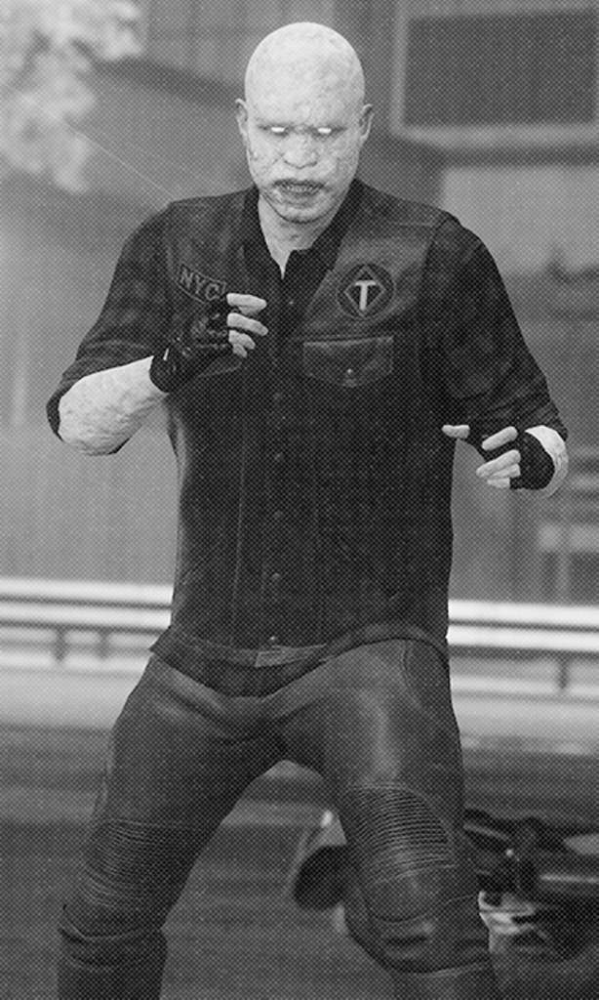

Rhino's destructive rampage encounters a major roadblock!
By Ben Urich
In a fierce confrontation, Spider-Man and Rhino collided head-on when the armored villain attempted to steal a substantial amount of gold bullion by plowing through a line of armored cars. Their intense battle unfolded at the intersection of 49th Street and 5th Avenue, where they hurled signs and city property at each other.
Despite the extensive destruction caused, Spider-Man eventually managed to subdue Rhino, but not before the duo demolished an entire city block and devastated the city's beloved ice rink. Now that Rhino has been transported to the Raft, New York City's high-security penitentiary, one question lingers: who will bear the financial burden of Spidey's recent rampage, the taxpayers or someone else?
 

Eerie Encounters
A new street drug called "Phantom Dust" spawns
horrifying monsters.
By Betty Brant
Citizens are being cautioned by
health officials about a dangerous
and highly addictive street drug
known as Grave Dust. Exclusive
medical reports obtained by the
Daily Bugle reveal the immediate
and violent transformations
experienced by users upon ingestion.
Dedicated biochemists are tirelessly
working to decipher the drug's composition,
as its reported effects include a
physical metamorphosis. Witnesses have
described users' skin turning gray and
becoming rigid, resembling stone.
Disturbingly, users also exhibit
extreme aggression, engaging in violent
acts against innocent individuals
and themselves.
In the interest of public safety
and individual well-being, health
authorities strongly advise anyone
suspected of using Grave Dust to
seek immediate assistance and support.
A F.E.A.S.T. FOR ALL
A flourishing sanctuary approaches its fifth anniversary.
By Ben Urich
Entrepreneur Martin Li, known for his
destitute in New York City.
charitable endeavors, established his
his inaugural F.E.A.S.T. shelter in Chinatown
half a decade ago. Since then, it has
emerged as a beacon of hope for the
When asked about his achievements,
Li humbly attributes them not to himself,
but to others. He acknowledges the
dedicated efforts of individuals like
May Parker, emphasizing that they
are the true heroes who keep F.E.A.S.T.
running smoothly on a daily basis.
Li has no plans for extravagant celebrations,
stating that F.E.A.S.T.'s fifth anniversary
will be marked just as its first day:
by providing comfort and assistance
to those in dire need.

Sideline the Spider
Don't let Spider-Menace replace police force
Op-ed submitted by James Stevenson
Law enforcement has grown tired of tolerating Spider-Man's
so-called "heroic" actions for an extended period. His
continued presence poses a threat to the mission and
reputation of the esteemed New York police force.
When did the Police Commissioner ever express a desire
for sidekicks? As far as I recall, never. Instead of
collaborating with the brave men and women who serve on
the police force, this amateur vigilante hides behind a
mask and swings around the city, dispensing his own
reckless version of justice against the city's adversaries.
We should not rely on this masked troublemaker to fulfill
the duties of individuals who have undergone years of training.
If he genuinely wants to eradicate crime from New York City,
he should take a cue from law enforcement and combat crime
in a lawful manner: by donning a uniform and badge!
Issues within the Prison System: A Revised Perspective
The Raft responds to rumored rot
By Robbie Robertson
Addressing Concerns at the Raft: Ensuring Secure
Incarceration for Super Villains
The Raft, our esteemed local maximum-security prison facility,
has long been regarded as the top-tier institution for housing
incarcerated super villains. However, recent rumors circulating
about compromised security have sparked public apprehension,
suggesting that the once impervious prison may be experiencing
difficulties.
According to these rumors, the Raft's security measures were not
fully tailored to accommodate the wide array of extraordinary
abilities possessed by its inmates. Insiders claim that the
existing protocols lack the specificity required to effectively
contain superpowered inmates, resulting in occasional incidents
where prison guards have had to improvise in restraining them
during outbursts.
In response to these concerns, prison officials have taken steps
to address the issue. A recent statement has outlined plans for
the warden to engage in discussions with city and state officials,
aiming to establish new benchmarks for supervising incarcerated super
villains. Immediate action has been scheduled to rectify any identified
weaknesses within the prison's infrastructure, providing reassurance
to both citizens and dedicated prison staff that the fortification
of the facility is a top priority.
With these initiatives underway, the community can find solace in
knowing that any vulnerabilities discovered within the Raft are
being actively attended to. By addressing the unique challenges
posed by superpowered inmates, the prison aims to enhance the
security measures and ensure the safe confinement of these
individuals.

Corporate Offices Under Scrutiny Amidst Speculation
of "Kingpin" Involvement
Mysterious Burglaries Plague Wealthy Elite with No Traceable Clues
By Kat Farrell
Speculation Surrounds Wilson Fisk, Construction Tycoon
Whispers and rumors have enveloped Wilson Fisk, a prominent
figure in the construction industry. Speculations suggest
that Fisk, along with his construction enterprise, plays a
role in nurturing the criminal underbelly of New York City.
Some anonymous tips even go so far as to claim that Fisk
himself is the enigmatic "Kingpin" who supposedly leads
this illicit network.
In response to these allegations, law enforcement authorities
found it necessary to launch an investigation into the esteemed
CEO. However, despite conducting a comprehensive search, no
substantial evidence was uncovered to substantiate the claims.
Consequently, the police department opted to discontinue any
further probe into Fisk's alleged involvement in the "Kingpin"
activities, deeming the rumors unfounded.
Despite the recent accusations, Fisk has shown little concern.
Exhibiting confidence in the face of adversity, the magnate
swiftly departed for Japan to pursue ongoing negotiations
with potential partners for overseas development ventures.
It is important to approach these rumors with caution,
recognizing the absence of concrete evidence against
Fisk and the need to separate fact from speculation.
As the situation unfolds, further information may emerge,
shedding light on the veracity of the allegations and
Fisk's role in the construction industry.